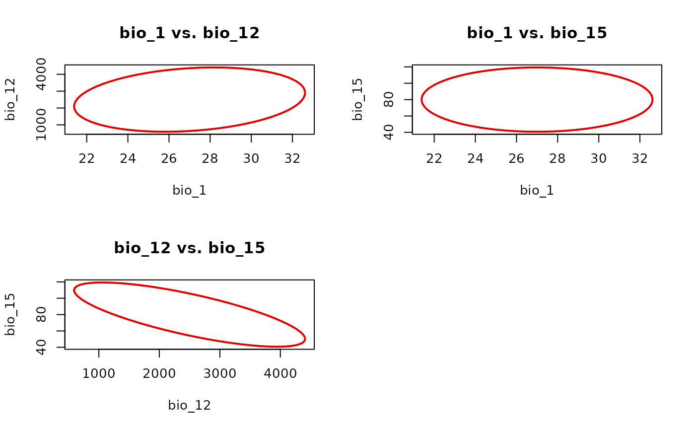
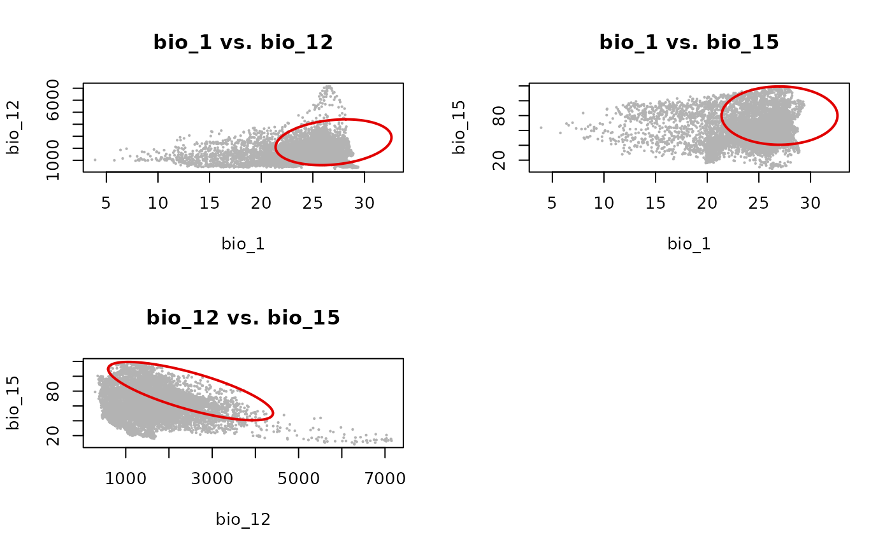
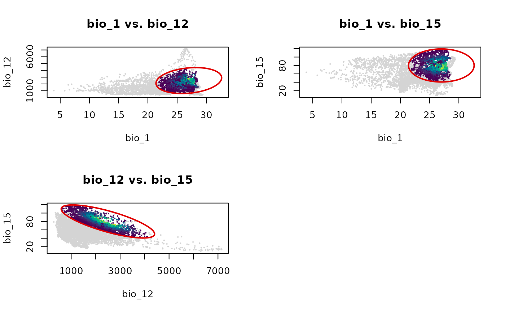

Plots all pairwise two-dimensional slices of a nicheR_ellipsoid
in a multi-panel layout using plot_ellipsoid(). When background
or prediction is supplied, axis limits are computed once from the
global range of all variables and shared across every panel, so projections
are directly comparable without distortion from per-panel rescaling.
Arguments
- object
A
nicheR_ellipsoidobject.- background
Optional data frame or matrix of background points passed to each
plot_ellipsoid()call. When provided, global axis limits are computed from the range of all variables inbackgroundcombined with all pairwise ellipsoid boundaries.- prediction
Optional data frame or matrix of prediction values passed to each
plot_ellipsoid()call. Used whenbackgroundisNULL. Global limits are computed from the range of all variables inprediction.- ...
Additional graphical arguments passed to
plot_ellipsoid().
Details
Global limits are computed per variable across the full data and all
ellipsoid boundary projections, then passed to each panel via the
fixed_lims argument of plot_ellipsoid(). This prevents
individual panels from rescaling to their own data extent, which would make
niche widths appear identical across dimensions even when they differ. If
neither background nor prediction is provided, each panel
shows only the ellipsoid boundary and limits come from that boundary alone,
which is the intended behavior for a boundary-only view.
Examples
data("example_sp_4", package = "nicheR")
data("back_data", package = "nicheR")
ell3d <- example_sp_4
# Boundary only
nicheR::plot_ellipsoid_pairs(ell3d, col_ell = "#e10000", lwd = 2)

# With background: global limits shared across all panels
ma_bios <- terra::rast(system.file("extdata/ma_bios.tif", package = "nicheR"))
back_df <- as.data.frame(ma_bios, xy = TRUE)
plot_ellipsoid_pairs(ell3d,
background = back_df,
col_ell = "#e10000", col_bg = "grey70",
lwd = 2, pch = 20, cex_bg = 0.3)

# With truncated suitability predictions
pred_trunc <- predict(ell3d,
newdata = back_df[, ell3d$var_names],
include_suitability = FALSE,
include_mahalanobis = FALSE,
suitability_truncated = TRUE)
#> Starting: suitability prediction using newdata of class: data.frame...
#> Step: Using 3 predictor variables: bio_1, bio_12, bio_15
#> Done: Prediction completed successfully. Returned columns: bio_1, bio_12, bio_15, suitability_trunc
plot_ellipsoid_pairs(ell3d,
prediction = pred_trunc,
col_layer = "suitability_trunc",
col_bg = "#d4d4d4",
col_ell = "#e10000", lwd = 2, pch = 20, cex_bg = 0.3)

#'